Layr
LAYR reframes weather as a system of influence, turning environmental data and context into actionable guidance.
Weather apps are designed to inform, not to guide. While they provide accurate data (temperature, conditions, forecasts), they fail to translate it into meaningful, everyday decisions. Users are left to interpret how weather affects what they wear, how they move, or how they plan their day. Information exists, but usability stays passive: a gap between environmental data and lived experience.
The design prioritises interpretation over presentation, shifting from “what the weather is” to “what the weather means.” Through a modular visual system and simplified decision cues, LAYR helps users navigate their day more intuitively, aligning data with behaviour, comfort, and routine.
- Role
- Product design, UI
- Scope
- Concept, iOS app, widgets, design system
- Year
- 2026
- Discipline
- Interface
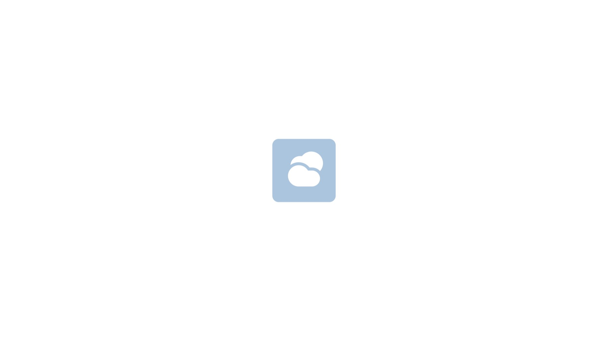
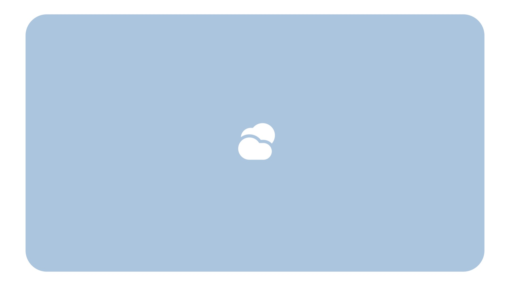
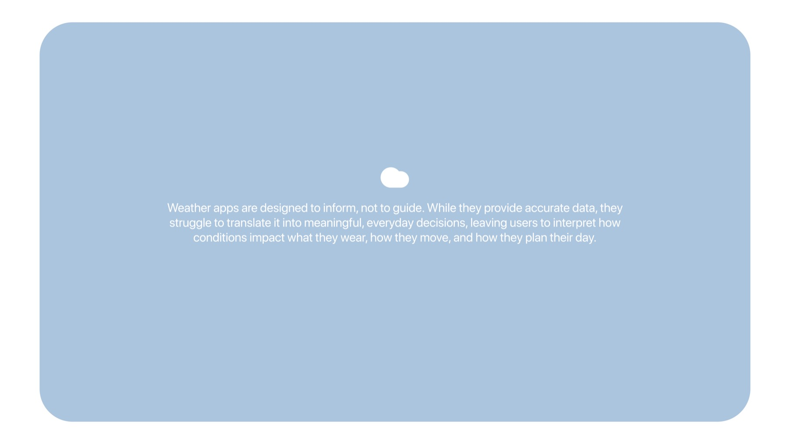
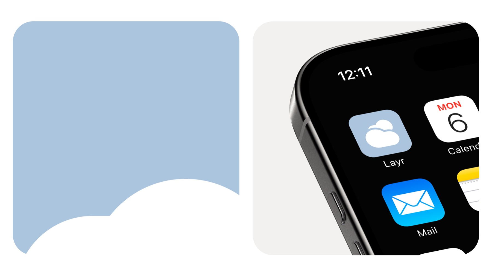
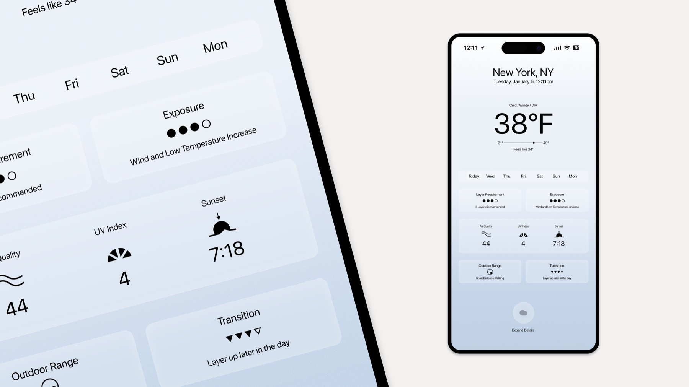
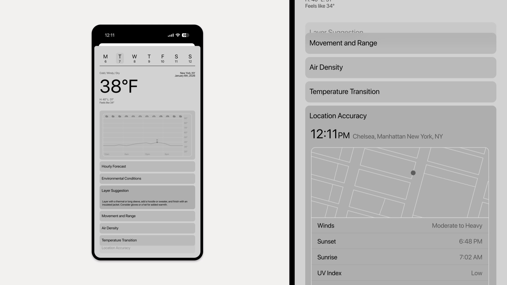
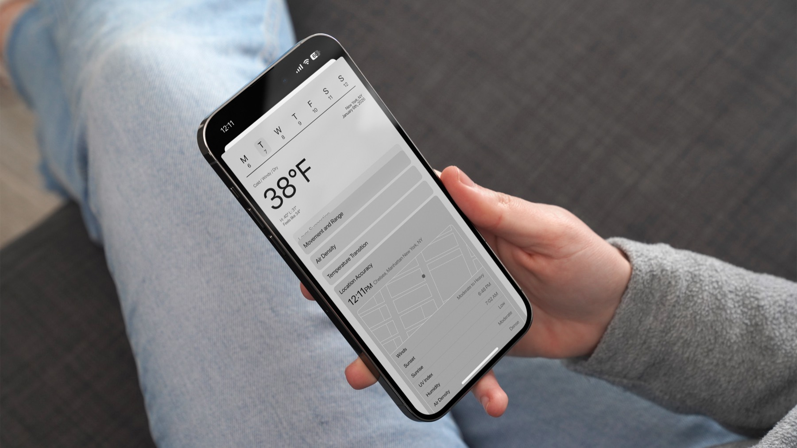
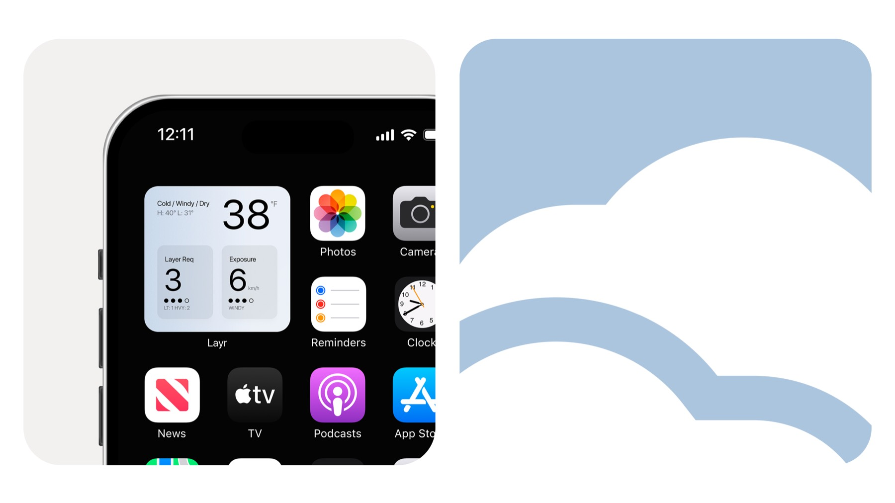
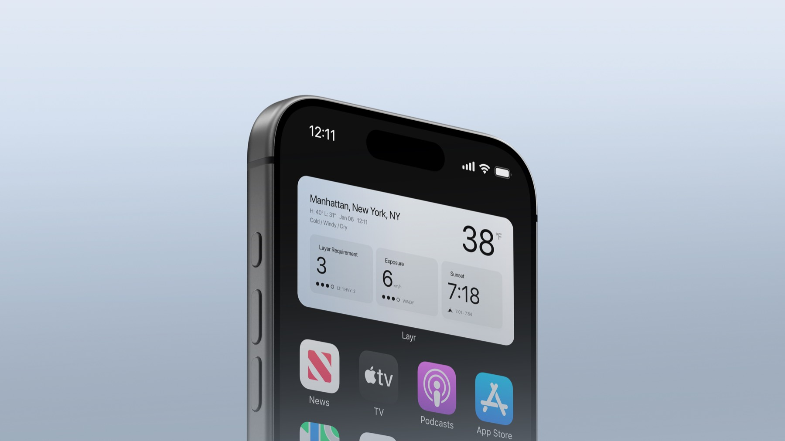
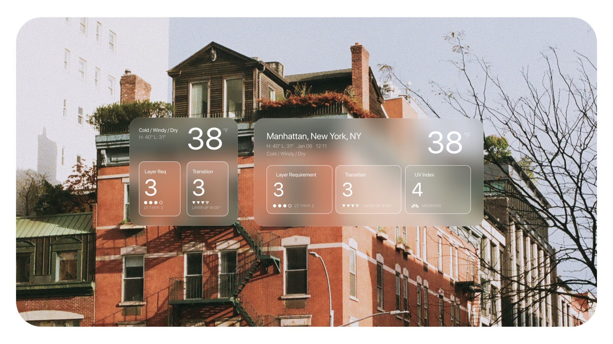
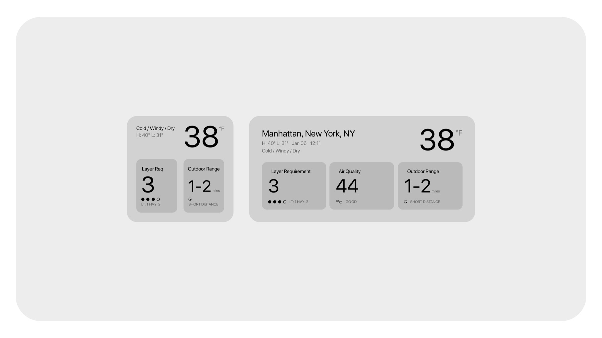
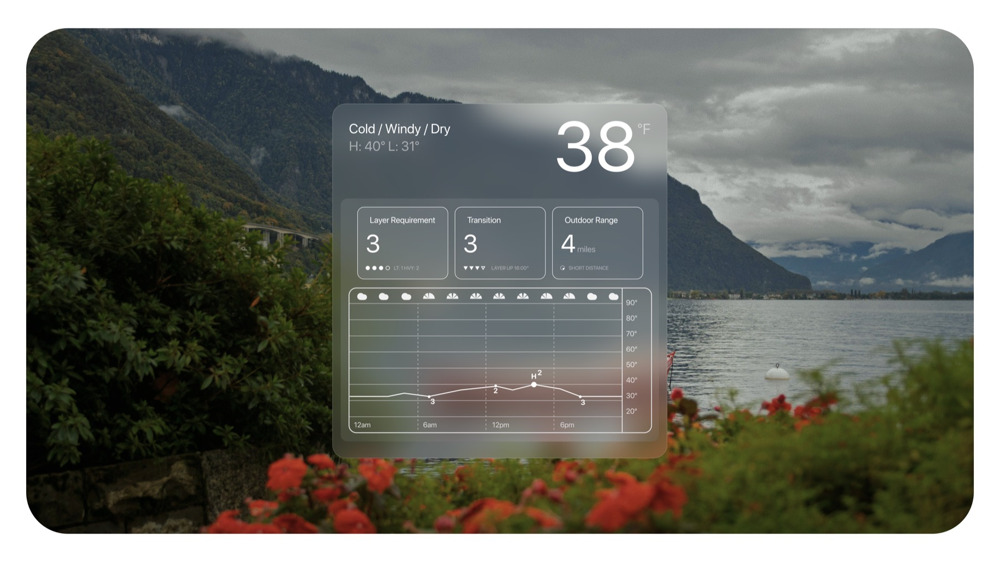
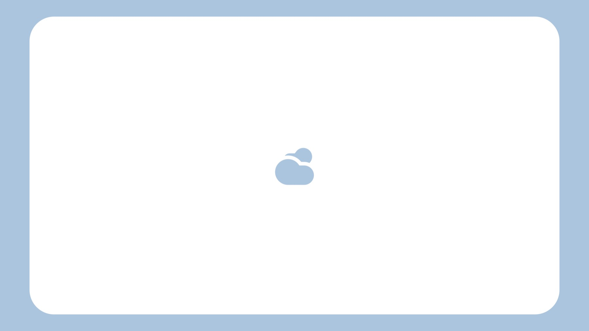